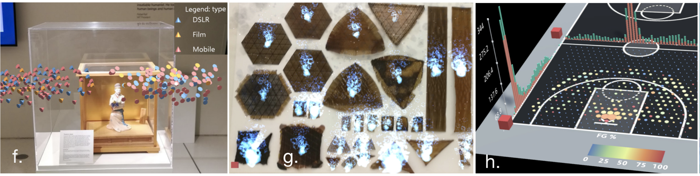

Benjamin Bach, PhD, HDR
Research Scientist
Inria, France
Bivwac team
200 Av. de la vieille Tour
33400 Talence, France
benjamin.bach@inria.fr
Google Scholar
LinkedIn
OrcID: 0000-0002-9201-7744
Full CV
Research & Bio
Publications
Teaching
Immersive Analytics
People involved
- Benjamin Bach
Publications

Exploring Interactions with Printed Data Visualizations in Augmented Reality Wai Tong, Zhutian Chen, Meng Xia, Leo Yu-Ho Lo, Linping Yuan, Benjamin Bach, Huamin Qu. IEEE Transactions on Visualization and Computer Graphics (TVCG, IEEE VIS, 2021), 2023, [PAPER] Best paper honorable mention

Grand Challenges in Immersive Analytics Barrett Ens, Benjamin Bach, Maxime Cordeil, Ulrich Engelke, Marcos Serrano, Wesley Willett, Arnaud Prouzeau, Christoph Anthes, Wolfgang Büschel, Cody Dunne, Tim Dwyer, Jens Grubert, Jason H. Haga, Nurit Kirshenbaum, Dylan Kobayashi, Tica Lin, Monsurat Olaosebikan, Fabian Pointecker, David Saffo, Nazmus Saquib, Dieter Schmalstieg, Danielle Albers Szafir, Matthew Whitlock, Yalong Yang. ACM Conference on Human Factors in Computing Systems (CHI), 2021, [PAPER]

Augmenting Static Visualizations with PapARVis Designer Zhutian Chen, Wai Tong, Qianwen Wang, Benjamin Bach, Huamin Qu. ACM Conference on Human Factors in Computing Systems (CHI), 2020, [PAPER]

DXR: A Toolkit for Building Immersive Data Visualizations Sicat, Ronell, Jiabao Li, JunYoung Choi, Maxime Cordeil, Won-Ki Jeong, Benjamin Bach, and Hanspeter Pfister. IEEE transactions on visualization and computer graphics (2019) (IEEE VIS 2018), 2019, [PAPER]


Multisensory immersive analytics McCormack, Jon, Jonathan C. Roberts, Benjamin Bach, Carla Dal Sasso Freitas, Takayuki Itoh, Christophe Hurter, and Kim Marriott. In Immersive Analytics, pp. 57-94. Springer, Cham, 2018, [PAPER]

Embodied Axes: Tangible, Actuated Interaction for 3D Augmented Reality Data Spaces Maxime Cordeil, Benjamin Bach, Andrew Cunningham, Bastian Montoya, Ross T. Smith, Bruce H. Thomas, Tim Dwyer. ACM Conference on Human Factors in Computing Systems (CHI), 2020, [PAPER]

Drawing into the AR-CANVAS: Designing Embedded Visualizations for Augmented Reality Benjamin Bach, Ronell Sicat, Hanspeter Pfister, Aaron Quigley. IEEE VIS, Workshop on Immersive Analytics, 2017, [PAPER]

A Design Space for Spatio-Data Coordination: Tangible Interaction Devices for Immersive Information Visualisation Maxime Cordeil, Benjamin Bach, Yongchao Li, Elliott Willson, Tim Dwyer. Proceedings of IEEE Pacific Visualization Symposium (Pacific Vis), 2017,

The Hologram in My Hand: How Effective is Interactive Exploration of 3D Visualizations in Immersive Tangible Augmented Reality? Bach, Benjamin, Ronell Sicat, Johanna Beyer, Maxime Cordeil, and Hanspeter Pfister. IEEE Transactions on Visualization & Computer Graphics, 2018, [PAPER]